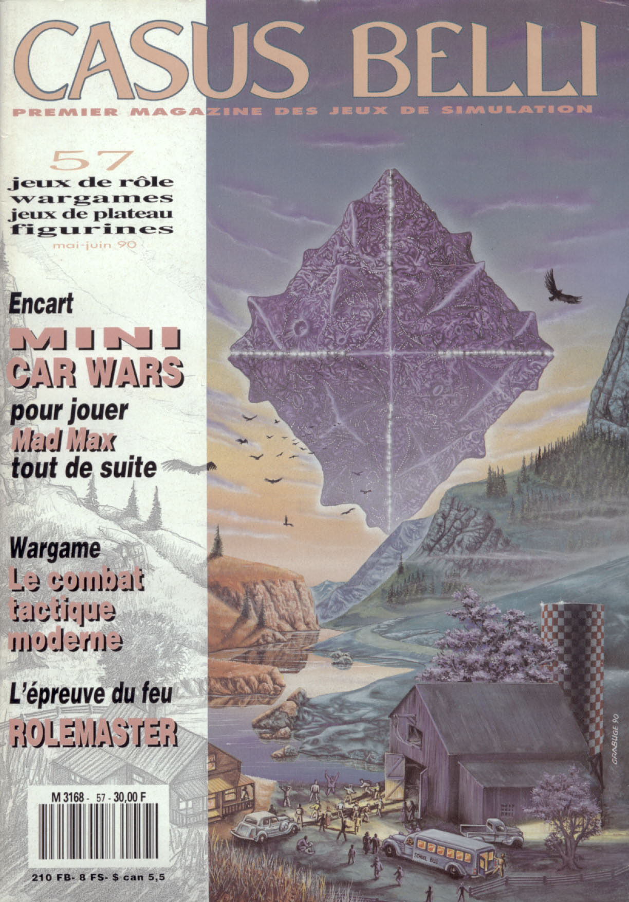
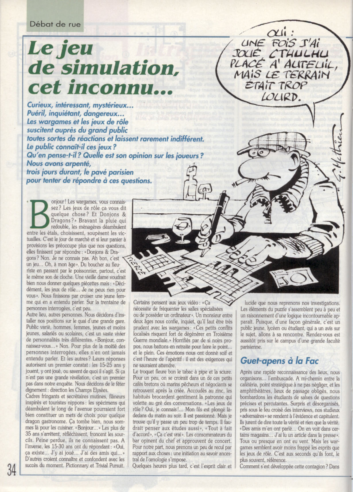
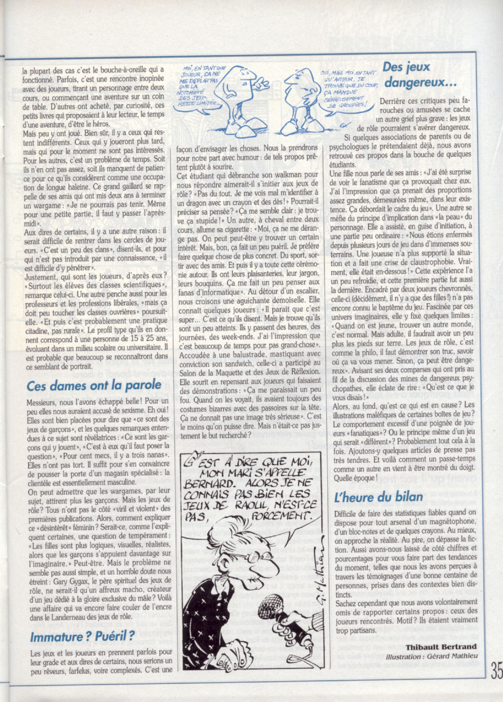

On est encore un poil tôt avant le Casus de mai-juin ne paraisse mais profitons des WE rallongés pour se lancer !
On commence avec le panorama de ce bimestre où, malgré des événements tragiques ou pas forcément réjouissants, s’il avait fallu figer la marche du Monde à la manière d’un Jour sans Fin, je pense que ces deux doux mois du printemps 1990 (la météo est en effet au diapason) en auraient été de bons candidats, avant que le Monde ne bascule à nouveau en Août.
L’actualité mondiale est en effet calme, encore toujours sonnée par la Chute du Mur de Berlin il y a à peine 6 mois et affairée pour organiser le monde d’après, avec une Union Soviétique qui n’est plus menaçante (en mai-juin, les Etats-Unis et l’URSS s’engagent dans un accord pour stopper la production d’armes chimiques et détruire une vaste portion de leurs stocks), et qui est encore présente pour assurer un minimum de stabilité. Il n’est certes pas encore question d’Europe élargie, mais l’idée de ces organisations transnationales progressent puisque c’est à cette période que les accords de Schenghen sont signés pour la libre circulation des personnes et des biens au sein de ce qui est encore la CEE. Même si les signes de la récession économique qui va lourdement plomber la décennie à venir commencent à se faire sentir, les signaux sont encore au vert : le taux de chômage aux Etats-Unis est de 5,2% et le Dow Jones atteint un record à 2900 points.
Les réunifications sont à la mode dans ce contexte de détente puisque quelques mois avant l’Allemagne, ce sont les deux anciens Yémen qui étaient divisés entre les deux puissances bipolaires, et qui entament leur processus en mai. Toujours dans ce vent de renouveau de valeurs démocratiques, après la libération de Mandela en début d’année, l’Afrique du Sud démantèle son appareil législatif autour de l’Apartheid. Et c‘est aussi à l’occasion du Sommet de La Baule avec les pays africains francophones que Mitterrand met à l’ordre du jour ces valeurs démocratiques dans les relations à venir avec la France.
Mais quelles valeurs démocratiques quand en Algérie les élections communales sont massivement remportées par le Front Islamique de Salut, précipitant les mois précédents qui ont agité le pays, et légitimant ceux-ci ?
En Europe, les mêmes questions se posent entre un partenaire soviétique encore indispensable concernant le destin du Continent, et une URSS qui vacille, que ce soit avec les proclamations des indépendances de la Lettonie et de l’Estonie qui suivent celles de la Lituanie, tandis qu’en Russie même Boris Eltsine proclame la souveraineté du pays par rapport à l’URSS… Les mêmes dislocations en Yougoslavie apparaissent aussi avec la Croatie et la Slovénie qui se détachent progressivement.
Chez l’Oncle Sam, ce sont surtout les actualités économiques qui prédominent : cette année 1990 inaugure l’hégémonie de Microsoft avec le lancement de Windows 3.0 ; le bloc nord-américain (Canada / Etats-Unis) entame la réflexion pour étendre l’Accord de Libre Echange vers le Mexique, ce qui deviendra l’ALENA ensuite.
C’est finalement, et bizarrement, en France que la plus grosse actualité va se faire. Pas tant sur les plans économiques ou politiques où à l’exception du début de la réforme des PTT qui va séparer la branche postale de la branche télécom, j’ai surtout relevé des épiphénomènes pendant cette période : le record de vitesse du TGV à plus de 500 km/h, les Champs Elysées transformés en champ de blé…
C’est donc plutôt les faits divers qui vont être un coup de tonnerre dans cette douceur printanière. Ce funeste 10 mai, la France découvre en effet avec stupéfaction et dégoût la profanation du Cimetière juif de Carpentras, dont les faits ont été perpétrées dans la nuit du 8 au 9 mai, mais découverts seulement après. L’actualité médiatique s’emballe sur fond de montée du FN et de réactions unanimes de la classe politique – Mitterrand, alors Président en fonction, prenant même part à la manifestation organisée. Le FN éructe et crie au complot, alors que la piste semble toute désignée, surtout maintenant que nous en connaissons tous le dénouement.
Mais à l’époque l’enquête piétine, les rumeurs locales sur la jeunesse dorée de la ville - dont l’implication du fils du Maire UDF - s’emballent, et ce qui devait être un fait divers détestable et bref devient un bourbier politico-judiciaire qui va traîner des années. D’abord avec les enquêteurs et l’instruction qui après avoir piétiné sur la piste néo-nazie vont privilégier plutôt la piste locale en raison de la pression énorme reçue pour trouver les coupables ; ensuite pour les familles de victimes qui auront la mauvaise idée, face à l’absence de progression de l’enquête, d’embaucher Gilbert Collard comme avocat. Celui-ci, comme on se souvient tous de ce sinistre personnage, s’engouffrera lui-même sur la piste locale, et fera le jeu du Front National qui s’érigera alors en victime expiatoire. Et au milieu de ce tourbillon, l’accusation explicite sur les jeux de rôle, notamment par une mythomane en mal de ses 15 minutes de gloire.
Je résume en quelques phrases plus de cinq ans d’enquête et de procédures malheureuses pour finalement aboutir à l’évidence. Mais en relisant les détails de cette tragique affaire, je me rends compte que même si les gesticulations pathétiques de Gilbert Collard et les accusations sur un jeu de rôle qui aurait « mal tourné » sont postérieures de quelques années, manifestement ces rumeurs autour d’un jeu de rôle sont apparues dès ces premières semaines de 1990 car Casus s’en fera brièvement l’écho ensuite. Je n’ai pourtant pas retrouvé de traces évidentes en ligne avec ces allusions dès 1990, si cela parle davantage à la mémoire de quelqu’un ? peut-être est-ce aussi plus détaillé dans le livre de Matelly que je n’ai jamais lu ? Il faudrait que j’épluche davantage Gallica et les journaux en ligne de l’époque mais ce sera probablement pour une autre occasion…
On termine sur cette actualité sombre qui va amorcer la panique morale à la française sur notre loisir pendant la décennie 1990, faute que les éléments issus du fondamentalisme chrétien et en provenance des Etats-Unis n’aient pas réellement pu trouver de prise dans les années 1980 quand l’activité était déjà perçue comme inquiétante et malsaine. L’ampleur va en être malheureusement tout autre sur cette décennie.
Il est temps maintenant de repartir sur des éléments plus riants en ouvrant le Casus de ce bimestre. Après s’être remis du dixième anniversaire, et même si Casus ne parviendra pas à quelques mois près à atteindre l’an 2000 et son vingtième anniversaire, l’aventure continue avec ce numéro 57. On arrive dans la période pré-été (mai - juin 1990), avec une couverture de Grabuge (la seule ?)

Beaucoup de news dans tous les sens dans ce numéro, dont la publicité pleine page de Descartes en entrée annonçant la VF d’un TORG pas encore paru aux US semble symptômatique de cet éclectisme. On lira déjà avec curiosité l’édito qui fait la part belle à Car Wars, puisque CB publie en écart une mini-version jouable du jeu, en réaction à l’offre jeu de plateau / jeu de société de l’époque jugée misérable (avec raison).
On débute avec plein de débriefs de conventions, ce qui fait que le retour du Salon des Jeux de 1990 est minimaliste (alors que Casus a fêté à cette occasion son anniversaire, mais avec la même modestie que dans son numéro 56). On y apprend toutefois qu’à cette occasion la radio Ouï FM était présente en permanence sur le stand pour donner de l’audience à notre loisir, et que des créateurs d’un obscur jeu – Formule Dé – était alors en quête d’un éditeur 😄
Côté courrier des lecteurs, après la lettre du numéro 53 qui reprochait le ton anti-URSS / pro-américain de Casus, c’est maintenant Jérôme qui reproche les références au FN détournées dans INS / MV, et l’orientation pro-communiste du magazine (à cause de la publicité passée pour le concert de Johnny Clegg, oui, oui). Heureusement que les shitstorms à l’époque allaient à la vitesse et au volume du courrier papier, mais on peut au moins constater que le niveau de finesse quand il s‘agissait de parler politique et JDR était déjà équivalent…
Dans les dernières nouveautés de ce bimestre, la parution de l’album Kroc le Bô que je signale puisqu’il vient de ressurgir sur nos étals 35 ans plus tard, et les belles reliures CB enluminées par Didier pour protéger ses collections (dont la mienne).
On va ensuite dans le plus sérieux, avec les prévisions et les sorties où c’est Jean qui rit et Jean qui pleure sur la partie de la production française. Dans la partie Jean qui rit, on retrouve les locomotives nationales de l’époque : Jeux Descartes avec l’AdC (Les Œufs de Karlath, le Recueil des Monstres des Contrées du Rêve), Star Wars (le Matériel de Campagne et le Guide de l’Empire à venir), James Bond (le supplément de règles Pour Votre Information), Warhammer (Middenheim) et aussi l’annonce de la traduction à venir de TORG ; Oriflam avec le Loup Blanc pour Stormbringer. Et enfin Siroz avec le premier supplément pour INS / MV (Intervention Divine), le plus bel écran toutes éditions confondues pour Berlin XVIII, et le second supplément pour Athanor – Ares Protectiva – qui ne sortira pour sa part jamais.
On sent que l’Âge d’Or est en train de se gripper puisque du côté Jean qui Pleure, on perçoit déjà les difficultés des jeunes éditions D3 avec également les annonces d’un écran et d’un supplément (Destination Paradise) pour Alter Ego qui ne paraîtront jamais (en tout cas pas retrouvé sur le GROG) ; ou le Dragon Radieux qui met en berne sa production et son magazine pour se restructurer. Et c’est toujours silence radio pour le retour de TSR en France alors qu’AD&D 2ème édition prend tout son essor à ce moment, avec peu de suivi par l’équipe de Casus faute de relais local…
Chez les petits éditeurs comme Les Silmarils ou Flamberge c’est Jean qui serre les dents en continuant les gammes : l’écran et le Guide de l’Imperium pour La Terre Creuse d’un côté et Objectif Terre pour Les Divisions de l’Ombre de l’autre. Mais il reste un espoir avec l’arrivée d’outsiders : Casus Belli qui lance sa production avec Jeux Descartes sur SimulacreS avec le scénario Ceux des Profondeurs de Pierre Lejoyeux (toute ressemblance avec un jeu existant dont les droits n’étaient pas encore tombés dans le domaine public serait évidemment fortuit), ou l’irruption de Ludodélire sur les jeux de plateau qui essaye de faire mentir l’édito du Casus : même si les jeux ne sont pas encore nommés, ils annoncent les arrivées prochaines de Footmania et la Vallée des Mamouths, et vont ensuite récupérer nos deux créateurs de Formule Dé esseulés lors du Salon des Jeux.
On franchit la Manche et l’Atlantique pour aller voir ce qui se passe ailleurs. Pour TSR comme je disais, même si les sorties sont soutenues, on verra surtout celles-ci dans les publicités des différents VPCistes dans ce numéro. On va donc plutôt se concentrer sur les autres éditeurs. FASA pour commencer avec Shadowrun où on se rend compte que les metaplots de cet univers sont développés dès cette période : Bottled Demon, Queen Euphoria. ICE ensuite avec du Rolemaster (Companion IV, déjà), de l’historique (Pirates critiqué en tête d’affiche et Vikings), même du Shadow World (Emer the Great Continent. Mais aussi du MERP (Greater Garad, Gorgoroth, Isengard qui est critiqué ensuite – ça fait du pays à parcourir) et du Cyberspace (Sprawlgangs, Cyber Rogues, Body Bank, Death Valley / Free Prison). Quelle prolixité !
Pas de sorties Chaosium indiquées, mais comme on n’a jamais trop de scénarios AdC, on nous présente Lurking Fear disponible chez Triad Entertainments. Enfin WEG propose encore un peu de Ghostbusters (eh oui – Lurid Tales of Doom et Game Chambers of Questal) ; pour Star Wars c’est la saison des Jedi : le GG5 – Return of the Jedi et le module solo Jedi’s Honor. Mais la grosse actualité est la sortie imminente de TORG et les annonces de la cohorte de suppléments et de romans qui suivront.
Enfin, si on ne veut pas aller plus loin qu’au-delà de la Manche, Games Workshop continue de soutenir (un peu) Warhammer avec la petite (et très bonne) campagne Lichmaster, et la plus grosse (et très mauvaise) campagne des Pierres du Destin.
Je termine avec rapidement avec les critiques qui sont peu nombreuses : outre les suppléments que j’ai mentionnés pour Rolemaster et MERP, Pierre Lejoyeux salue la sortie de Elder Secrets pour Runequest (et vomit ses illustrations), tandis que @Tristan continue de se dévouer pour suivre la gamme Ars Magica (le supplément Covenants).
L’Epreuve du Feu se consacre pour sa part à la VF de Rolemaster, plus technique que critique mais qui fait un tour d’ensemble du jeu et de la qualité de sa traduction. Il est accompagné du encore traditionnel mini-scénario d’introduction, qui sera le dernier et c’est vraiment dommage que CB ait abandonné ce format dans les EdF. Il est cette fois-ci rédigé par Anne Vétillard. Pour un jeu générique med-fan comme Rolemaster, on est curieux de ce qu’on va découvrir… Anne nous propose finalement un truc pas mal du tout, qui m’a inspiré sur le modèle de L’Attaque des Gobs pour COF de BBE qui s’en sert pour faire des initiations de 30-45 min. De l’aveu d’Anne, ça permet de faire office de tutoriel pour le système de Rolemaster (même si ça manque d’informations détaillées, en raison d’un signage plus que contraint), et je me suis dit – générique oblige – que ça pouvait facilement être repiqué sur tous systèmes med-fan qu’on voudrait playtester en mode express avec ce petit scénario malin. Bref, je garde en tête.
Avant de détailler l’encart scénarios de ce numéro, on termine avec les parties rédactionnelles. D’abord un Profession : Improvisateur par Jean Balczesak, moyen sans plus. Les afficionados des PBTA - et pas que - hurleront probablement en lisant ceci dès le début : « dans les jeux de rôle, l’improvisation est un mal nécessaire ». Plus intéressant est la double page d’une enquête forcément approximative parce que menée en solo (par Thibault Bertrand) et évidemment de façon aléatoire plutôt que statistique de la perception du loisir en ce début 1990. On est alors à la charnière entre l’Âge d’Or et la décennie sombre, à quelques semaines du drame du Cimetière de Carpentras dont on reparlera. Je l’ai trouvée super intéressante pour voir comment le loisir était alors diffusé et j’en profite donc pour la reproduire ici, et vous emmener avec moi en ce début 1990.


Un petit tour ensuite sur les scénarios avec 4 propositions pour ce numéro : un Rêve de Dragon du sieur Gerfaud, un Stormbringer d’Eric Simon, l’auteur phare d’Oriflam à l’époque, et deux productions de Denis Beck : un Simulacres Fantastique (comprenez Contemporain – Epouvante), et le traditionnel AD&D plus dans Laelith, et pas non plus dans le Recueil de BBE.
• Le Rêve de Dragon, Le miroir de Tshikita, est comme toujours très imaginatif avec son rocher en forme de sein qui préfigure une magicienne haut rêvante du Deuxième Âge et cache son repaire, et désespérant car on retrouve des éléments éculés : des reliques du Deuxième Âge et surtout une résolution du scénario qui passe uniquement par un sort d’Hypnos…
• Le Stormbringer, Le Chemin des Damnés, ravira là encore @nonolimitus et tous les nostalgiques de la 1ère édition mais en réalité, c’est pas bon du tout. Ca reprend les poncifs de l’univers (démons à foison) pour bâtir une intrigue ultra-linéaire (même pas sûr qu’on puisse parler d’intrigue), et terminer sur un final qui se veut épique, mais qui se révèle surtout consternant sur la résolution qu’il propose. Idéal si vous voulez faire jouer votre petit frère, ou je devrais dire plutôt votre petit-fils maintenant
• Le Simulacres Fantastique, Concours d’Entrée, est un scénario donc contemporain, a priori transposable en 2025 - sans qu’il y ait des éléments de 1990 qui l’en empêche - à la Cthulhu (sans le Mythe) / Chill (sans la SAV(eur) ). Après sa lecture déçue, je me suis fait le même parallèle entre Denis et Laurent Bernasconi, en général très inspirés quand il faut écrire du med-fan, et beaucoup moins quand ils sont dans ce type d’ambiance. On retrouvera en effet beaucoup de clichés dans ce scénario qui ne promet pas que le retournement de situation de la fin produise la surprise escomptée…
• L’AD&D propose un niveau 0, eh oui, car il s’agit d’incarner de jeunes adolescents, à l’aube de leur carrière d’aventuriers. J’ai commencé à regarder ceci un peu circonspect pour découvrir finalement un truc sympa, que j’utiliserai bien un jour en spin off des Disparus de Clairval de COF pour faire jouer les enfants du village. On lira sinon amusé la maladresse dûment relevée par la rédaction quand il s’agit pour Denis de décrire le village avec les femmes qui s’occupent « bien sûr » (les guillemets sont rajoutés par CB) des tâches domestiques
On a terminé pour la partie jeu de rôle et on peut passer au platal et au ouargame maintenant. Sur la partie Platal, Tristan nous dissèque les deux versions non Advanced (en VF) et Advanced (en VO) de Heroquest, en s’emballant très modérément sur les deux produits. André Foussat se penche quant à lui sur Car Wars, et si CB en publie une mini-version en encart, ce n’est évidemment pas pour dire du mal de ce jeu.
Le Ouargame fait le point pour sa part sur le combat moderne, avec la mise au placard des affrontements de type OTAN – Pacte de Varsovie, pour « regretter » que l’éloignement de conflits de ce type de grande ampleur ne va pas aider à constater l’évolution des matériels et doctrines et leur mise en pratique en conditions réelles, puisque les derniers grandes guerres modernes remontent maintenant aux Malouines et à au théâtre Iran-Irak. Malheureusement, CB ne se doute pas des événements qui vont se précipiter dans seulement quelques mois, remettant l’Irak au centre du jeu et qui permettront de mettre en application un dossier ici très théorique mais judicieusement intitulé : « une boucherie sophistiquée ». Une revue de jeux vient compléter les enseignements de ce dossier : Airland Battle, Tac Air et Air & Armor. La rubrique continue en chroniquant ensuite un Siege of Jerusalem bien plus éclectique, et en faisant un panorama très complet du Jeu de par Correspondance, brocardant les différents types de joueurs comme Tristan le fera 20 numéros plus tard avec les types de rôlistes. Première Ligne continue à étoffer son système de règles avec un chapitre ici plus dédié à reconstituer les affrontements purement historiques.
On termine avec les rubriques de fin du magazine : la Ludotique se désole sur la tentative ratée de Drakkhen pour prendre la succession de Dungeon Master ; chez Roland Wagner, les classiques sont mis en avant avec ce numéro : A.E. Van Vogt (Les Portes de l’Eternité), Asimov (Azazel), Spinrad Les années fléaux), et même maintenant Gibson (Mona Lisa s’éclate). Côté BD, moisson de titres et beaucoup de bonnes choses, en attendant la parution de l’album de Kroc le Bô : la clôture de la série des Compagnons du Crépuscule de Bourgeon, Le raid infernal dans la collection La jeunesse de Blueberry, etc. etc. Les amateurs de super-héros qui étaient encore très confidentiels à l’époque auront même droit à la VF de l’Encyclopédie Marvel de A à Z en trois volumes : sacré pièce d’époque vu comment le genre a continué à évoluer depuis ! Dans le rubrique Universalis, Tristan, qui doit être en train d’écrire en parallèle le supplément Simulacres Aventures Extradordinaires et Machinations Infernales, nous recommande pour sa part Les Habits Noirs de Paul Féval (2000 pages de complot par un feuilletoniste du XIXème siècle) ou Fata Morgana de William Kotzwinkle (enquête et périple entre Paris et Vienne, sous le Second Empire) pour alimenter vos nouvelles éditions de Maléfices et Château Falkenstein. Et pour plus de dépaysement, Tristan nous chronique aussi la série Le Juge Ti, en précisant « qu’il reste à en écrire le jeu de rôle » : 35 ans plus tard, c’est presque toujours vrai, hein @Macbesse ?
Je termine sur cette gentille pique pour donner rdv pour dans deux mois les ami(e)s !